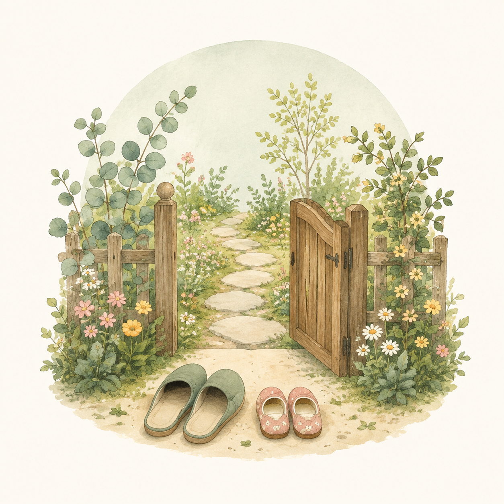

WELCOME
入園案内
清華保育園への入園をお考えの方へ

まずは園見学へお越しください
清華保育園では、入園をご検討中の方の園見学を随時受け付けています。
実際の保育の様子や園の雰囲気をご覧いただきながら、ご不明な点についてもご説明いたします。
お子さまと一緒のご見学も歓迎しております。
事前にお電話またはお問い合わせフォームよりご予約ください。
TEL: 0827-63-1222 受付時間：平日 9:00〜17:00
募集要項
令和8年度（2026年度）入園児を募集しています
| 施設名 | 清華保育園（認可保育所） |
|---|---|
| 所在地 | 山口県岩国市由宇町千鳥ケ丘3丁目1-7 |
| 対象年齢 | 生後約半年〜就学前まで |
| 定員 | 50名 |
| 開園時間 | 月〜金 7:00〜19:00 / 土 7:00〜18:00 |
| 延長保育 | 18:00〜19:00 |
| 休園日 | 日曜日・祝日・年末年始（12/29〜1/3） |
| 給食 | 補食給食（自園調理、米飯給食あり）・おやつ2回（0〜2歳児）、おやつ1回（3〜5歳児） |
入園までの流れ
4つのステップで入園準備を進めます
1
園見学
まずはお気軽にお電話ください。園の雰囲気をご覧いただけます。
2
申込み
お住まいの区市町村の窓口へ入園申込書をご提出ください。
3
選考・内定
区市町村の利用調整により、入園の可否が通知されます。
4
入園面談
お子さまの様子やアレルギーなどを確認し、慣らし保育の計画を立てます。
費用について
保育料のご案内
| 保育料 | 世帯の所得に応じて区市町村が決定します。3〜5歳児は幼児教育・保育の無償化の対象です。 |
|---|---|
| 延長保育料 | 無料（18:00〜19:00の利用） |
| 給食費（3〜5歳児） | 副食費 4,900円/月 |
| その他 | 父母会費 500円/月 |
よくあるご質問
入園に関するQ&A
見学はいつでもできますか？
はい、平日に随時受け付けています。園の行事等によりご案内できない時間帯もありますので、事前にお電話（0827-63-1222）でご予約をお願いいたします。お子さまと一緒にお越しいただけます。
慣らし保育はありますか？
はい、入園後はお子さまの様子に合わせて慣らし保育を行っています。無理のないよう、ご家庭と相談しながら少しずつ進めていきます。
アレルギー対応はしてもらえますか？
医師の指示に基づき、除去食や代替食に対応しています。詳しくは入園前の面談でご相談ください。
途中入園はできますか？
空きがあれば年度途中の入園も可能です。お住まいの区市町村の窓口にお問い合わせください。空き状況は当園にお電話いただいてもお答えできます。
駐車場・駐輪場はありますか？
駐車場は園から20m先にあります。登降園の際は園門前に停めていただけます。
お問い合わせ
見学のお申し込みやご質問はこちらからどうぞ
フォームが表示されない場合は、お電話でも受け付けております。
TEL: 0827-63-1222 受付時間：平日 9:00〜17:00
個人情報保護方針（プライバシーポリシー）
清華保育園（以下「当園」）は、お問い合わせフォーム等を通じてお預かりする個人情報について、以下の方針に基づき適切に管理いたします。
- 利用目的：お問い合わせへの回答、見学のご案内、入園に関するご連絡に使用いたします。
- 第三者提供：法令に基づく場合を除き、ご本人の同意なく第三者に個人情報を提供することはありません。
- 安全管理：個人情報の漏えい・紛失・改ざんを防止するため、適切な安全管理措置を講じます。
- 開示・訂正・削除：ご本人からの開示・訂正・削除のご請求には速やかに対応いたします。
お問い合わせ先：清華保育園 TEL 0827-63-1222
お電話でのお問い合わせ
お気軽にお電話ください
TEL: 0827-63-1222
受付時間: 平日 9:00〜17:00